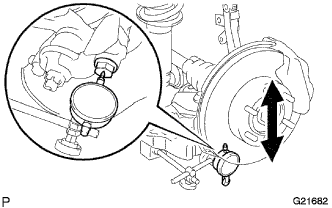

FRONT LOWER SUSPENSION ARM > ON-VEHICLE INSPECTION |
| 1. REMOVE FRONT WHEEL |
| 2. INSPECT FRONT SUSPENSION LOWER NO. 1 ARM |
Install the hub nuts to the disc.
|  |
Using a dial indicator, check the lower ball joint for excessive play by pushing the hub nuts up and down with a force of 294 N (30 kgf, 66 lbf).
| 3. INSTALL FRONT WHEEL |